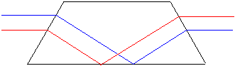
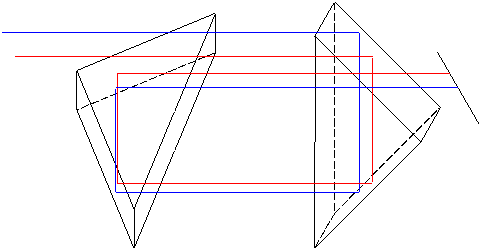

Rättvändningssystem
Exempel kan se ut som i nedanstående figurer. Försök följ strålarna och se om de verkligen gör sin uppgift!

Detta kallas Dove-prisma och används i tubkikare och kikarsikten.
Detta är det vanligaste i kikare. Två vinkelställda prismor. Nackdelen är förståss att det bygger i sidledd.
